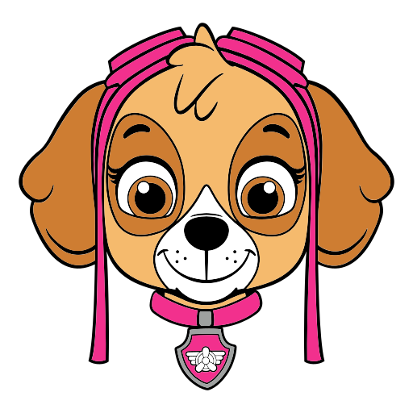

skye · sílabas — M P S L T only
The word on top is a cheat sheet.
She is on ma me mi mo mu and the same for P S L T.
nido is illegal. Showing ni do already written
means she copies shapes, she does not blend. Bank is now
mamá, mapa, mesa, sopa, sapo, pato… Picture first. Speak
each sílaba.

Volar con Skye
⭐ 85
sílabas · pato · 0/3
Starter · recommended
1. Foto + huecos
Duck first. Two empty wells. Tap pa then
to. Each tap speaks that sílaba. The word
pato appears only when both are in. She blends,
she does not copy.
2. Foto + pista
Same bank. Picture plus a faded word so she can peek.
Closer to today. Easier, more copying. Good if the
photo alone is too hard the first week.
3. Oído primero
No picture at the start. She hears ma, finds
it among ma / pa / sa. Then pa. Ear + family.
Harder. Later, not first.